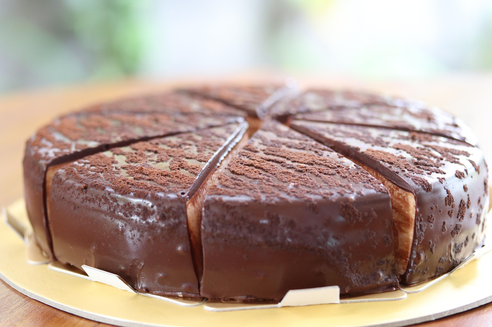

Description
Chocolate cake is a rich, indulgent dessert featuring a moist, tender crumb flavored with
cocoa powder or melted chocolate. Typically featuring a dark brown color, it is often
topped with frosting, icing, or ganache. Popular variations range from airy sponges to
dense fudgy textures, commonly enhanced with coffee to deepen the chocolate flavor.
Ingredients
- Chocolate-Cake Mix
- Cherry Cake Filling
- Eggs
- Sugar
- Butter
- Milk
- Chocolate Chips
Steps
- Gather the ingredients. Preheat the oven to 350 degrees F (175 degrees C). Grease
and flour a 9x13-inch baking pan.
- Combine cake mix, cherry pie filling, and three eggs in a large bowl until well
blended; pour cake mixture into prepared pan.
- Bake in the preheated oven until a toothpick inserted into the center comes out clean,
about 35 to 40 minutes. Let cake cool completely.
- To make the frosting: Combine sugar, butter, and milk in a saucepan. Bring to a boil,
stirring constantly, and cook for 1 minute. Remove from heat and stir in chocolate chips
until melted and smooth.
- Spread frosting evenly over cooled chocolate cake. Slice and serve.